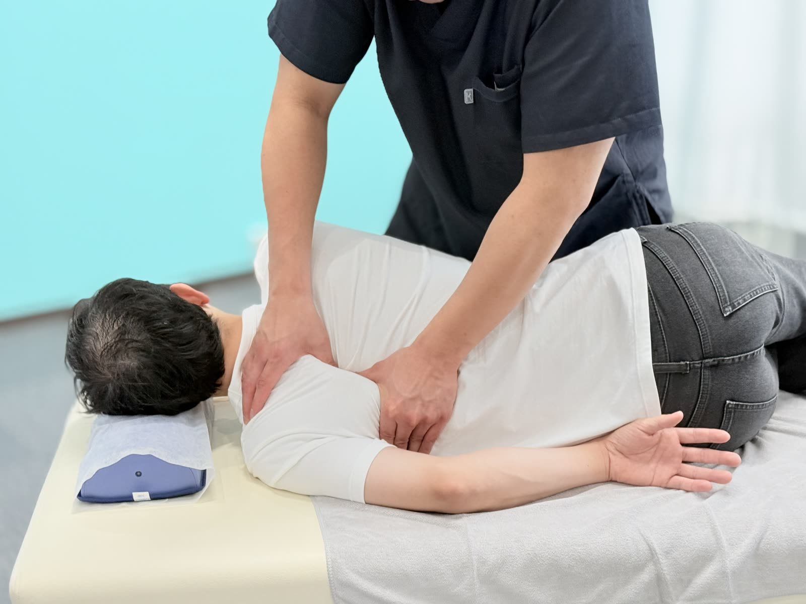

湿布・コルセット・痛み止めでごまかす毎日、そろそろ卒業しませんか。腰痛の多くは「腰そのもの」ではなく「土台の骨盤」に原因があります。
日本人のおよそ4人に1人が悩むといわれる腰痛。「付き合っていくしかない」と諦める必要はありません。
腰は、上半身の重さを受け止めながら、立つ・座る・かがむ・ひねる、あらゆる動きの中心になる場所です。その腰を支える土台が骨盤。この骨盤が前後に傾いたり左右にねじれたりすると、腰まわりの筋肉の一部にだけ負担が集中し続けます。
例えば座り姿勢。骨盤が後ろに倒れた「仙骨座り」では、立っている時の約1.4倍もの負担が腰の椎間板にかかるといわれます。デスクワークで1日8時間この姿勢を続ければ、腰が悲鳴を上げるのも当然です。
つまり慢性腰痛の正体は、「骨盤の歪み × 長時間の同じ姿勢 × 支える筋力の低下」の掛け算。痛む場所だけを揉んだり湿布を貼ったりしても、この掛け算が残っている限り痛みは戻ってきます。

ポイントは順番です。まず硬く緊張した腰・お尻まわりの筋肉をゆるめて痛みを落ち着かせる。次に土台である骨盤の歪みを矯正して、負担が一箇所に集中しない身体に整える。最後に、正しい座り方や体幹を支えるセルフケアで「戻らない状態」を定着させる。この3段階を踏むことで、腰痛は「繰り返すもの」から「卒業できるもの」に変わります。

いつ・どんな動きで痛むのか、お仕事や生活スタイルまで丁寧にヒアリング。痛みの出方から原因のあたりをつけていきます。

骨盤の傾き・ねじれ、股関節の硬さ、体幹の使い方をチェック。「なぜあなたの腰が痛くなるのか」を目で見てわかる形でご説明します。

緊張した筋肉をゆるめ、骨盤矯正で土台から整えます。正しい座り方・ご自宅でのセルフケアまでセットでお伝えします。

ぎっくり腰のような急性の腰痛（原因のはっきりしたケガ）は健康保険の対象になる場合があります。長年の慢性腰痛は自費メニュー（骨盤矯正等）でのご案内です。カウンセリングで状態を確認してご説明します。
急にズキッと痛めた直後は炎症を抑えるため冷やすのが基本、慢性的な重だるい腰痛は温めて血流を促すのが基本です。自己判断で強くもむのは悪化のリスクがあるため、まず状態を検査させてください。
痛みが強い時期のサポートとしては有効ですが、長期間頼り続けると体幹の筋力が落ちて腰痛が慢性化しやすくなります。当院では卒業のタイミングまで含めてアドバイスしています。